19/05/2025 — Điện tâm đồ này biểu hiện điều gì trong bối cảnh troponin “âm tính”?
Bản dịch tiếng Việt của bài "What does this ECG represent in the setting of “negative” troponins?" – Dr. Smith’s ECG Blog. Giữ nguyên toàn bộ 17 hình ảnh của bản gốc.

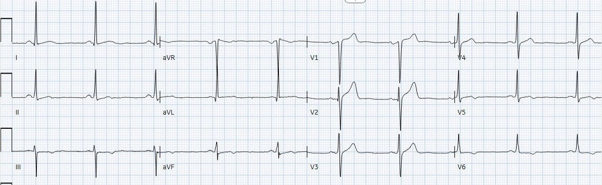
Bài này do Mark Hellerman, bác sĩ nội trú chuyên khoa Tim mạch (Cardiology Fellow) tại Stony Brook, viết.
Anh ấy có rất nhiều video hay về OMI và các chủ đề tim mạch khác tại đây.
Ca bệnh:
Một người đàn ông 60 tuổi, không ghi nhận tiền sử bệnh lý, đến khoa cấp cứu (ED) để được đánh giá vì đau ngực.
Trong 3 ngày qua, ông bị đau ngực sau xương ức, xuất hiện khi gắng sức và hết khi nghỉ.
Tại thời điểm được đánh giá ở khoa cấp cứu, ông không còn đau; lúc này ghi được điện tâm đồ sau:

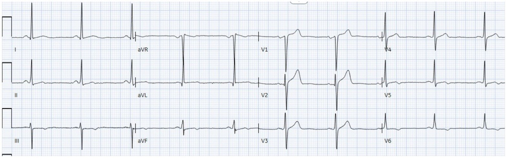
Bản ghi trên và tóm tắt lâm sàng được gửi cho Dr. Smith, và ông trả lời như sau: “Có vẻ đây là một OMI thành dưới và thành bên đã tái tưới máu. Các sóng T cao ở V1-V3 cũng có thể biểu hiện sự tái tưới máu của thành sau.”
Hình dưới đây làm nổi bật (bằng màu đỏ) hình ảnh sóng T tái tưới máu (reperfusion T waves) tinh tế ở thành dưới và thành bên mà Dr. Smith đã nhận thấy

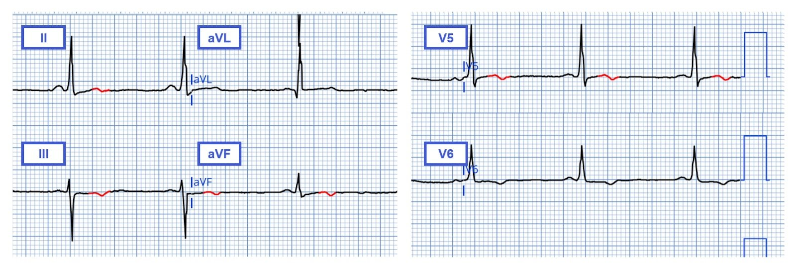
Đáng tiếc, mô hình AI điện tâm đồ PMCardio Queen of Hearts đã không phát hiện tái tưới máu hay OMI đang diễn ra.
Giá trị troponin T tim độ nhạy cao (hs-cTnT) ban đầu là 24 ng/L (cao hơn bách phân vị thứ 99 cho nam giới 2 ng/L, theo tờ hướng dẫn sử dụng của bộ xét nghiệm).
3 giờ sau, hs-cTnT lặp lại là 20 ng/L (thấp hơn bách phân vị thứ 99 là 2 ng/L).
8 giờ sau khi nhập viện, hs-cTnT là 18 ng/L và ghi được điện tâm đồ sau:

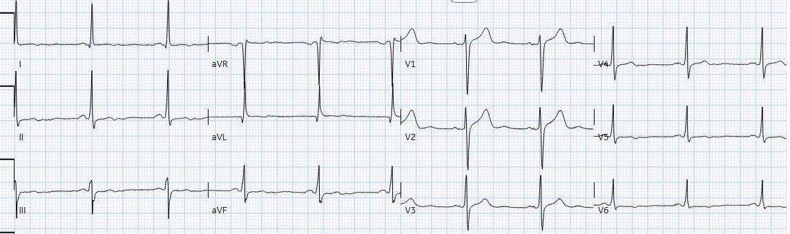
Bệnh nhân được nhập khoa tim mạch để thăm dò thêm nguyên nhân đau ngực
12 giờ sau khi nhập viện, bệnh nhân xuất hiện choáng váng và buồn nôn. Dấu hiệu sinh tồn cho thấy huyết áp 81/53. Ghi được điện tâm đồ sau:

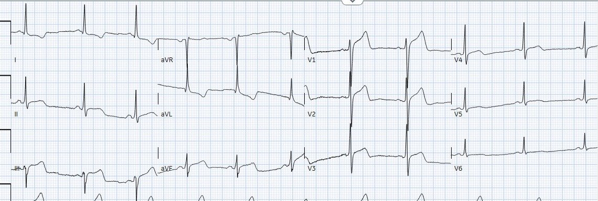
Smith: Các sóng T nay đã dương (bình thường “giả”)
Đây là dấu hiệu của tắc lại (trong ca này, sự tắc lại không hề tinh tế)
Xem thêm các ca giả bình thường hóa (pseudonormalization) tại đây.
Cũng cần lưu ý ST chênh lên lớn và sóng T tối cấp ở V1. Nhiều khả năng đây là nhồi máu thất phải (RV MI) và có thể dự đoán tắc RCA đoạn gần
Phòng thông tim (cath lab) được kích hoạt ngay lập tức. Một mẫu troponin lặp lại được lấy vào thời điểm này, sau đó cho giá trị 17 ng/L.
Trong lúc chờ đội thông tim đến, ghi được điện tâm đồ sau:

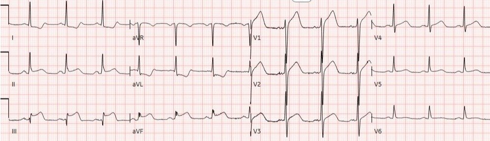
Chụp mạch vành cho thấy tắc hoàn toàn 100% do huyết khối ở RCA đoạn gần (ưu thế):

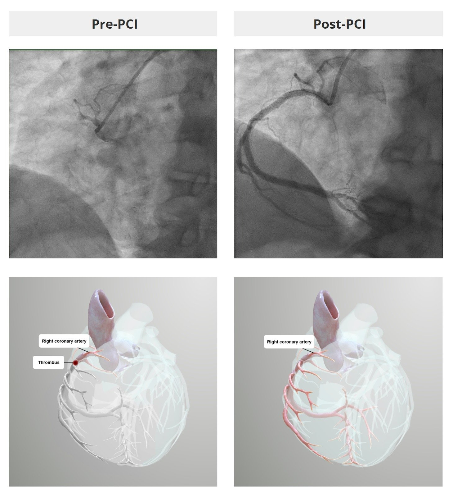
Điện tâm đồ ghi lại 1 giờ sau PCI:

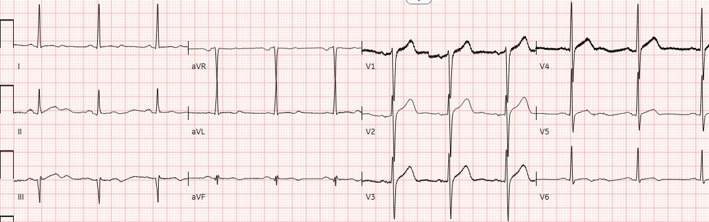
Một lần nữa, chúng ta thấy đảo ngược phần cuối sóng T dạng hai pha tinh tế ở vùng dưới và vùng bên — lần này đi kèm với tái tưới máu sau PCI.
Siêu âm tim làm vào ngày hôm sau cho thấy phân suất tống máu bình thường, không có rối loạn vận động thành.
Điện tâm đồ ghi lại 3 tháng sau cho thấy đảo ngược phần cuối sóng T dạng hai pha tinh tế ở các chuyển đạo dưới đã hết:

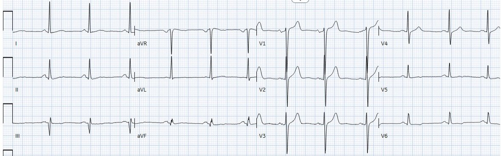
So sánh phóng to các chuyển đạo dưới bên dưới:

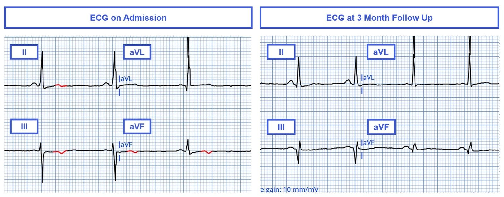
Bàn luận:
Ca này nhắc chúng ta hai điểm then chốt (pearl) quan trọng:
- Hình ảnh tái tưới máu trên điện tâm đồ có thể tinh tế, nhưng khi được nhận ra, nó có thể giúp chúng ta phân tầng nguy cơ – và do đó xử trí – một cách thận trọng hơn ở những bệnh nhân đến khám vì triệu chứng đau thắt ngực gần đây.
- Đau thắt ngực không ổn định (Unstable Angina, UA) vẫn tồn tại, ngay cả trong kỷ nguyên của các xét nghiệm troponin tim độ nhạy cao
Hình ảnh tái tưới máu:
Như đã điểm lại trong các bài trước, hội chứng Wellens là hội chứng của nhồi máu cơ tim do tắc (OMI) thoáng qua ảnh hưởng thành trước, trong đó điện tâm đồ được ghi không phải lúc có triệu chứng đau thắt ngực, mà chỉ sau khi các triệu chứng đó tự hết (tương ứng với tái tưới máu mạch vành tự phát) — lúc này điện tâm đồ cho thấy sóng T tái tưới máu với sóng R được bảo tồn.
Khi học về hội chứng Wellens, nhiều học viên chỉ được dạy nhận ra hình thái “dạng B” (Pattern B) (đặc trưng bởi sóng T đảo ngược sâu, đối xứng), mà không nhận thức được rằng sóng T tái tưới máu tồn tại trên một phổ liên tục — thường tiến triển từ đảo ngược phần cuối sóng T dạng hai pha tinh tế hơn, đặc trưng của “dạng A” (Pattern A) (xem hình bên dưới).
Mặc dù các sóng T ở chuyển đạo trước tim phía trước đặc trưng của hội chứng Wellens là một phân nhóm quan trọng của sóng T tái tưới máu (tương ứng với tái tưới máu thành trước cơ tim), sóng T tái tưới máu có thể gặp ở các chuyển đạo tương ứng với bất kỳ vùng cơ tim nào và gợi ý cho bạn về sự tái tưới máu gần đây ở vùng đó.

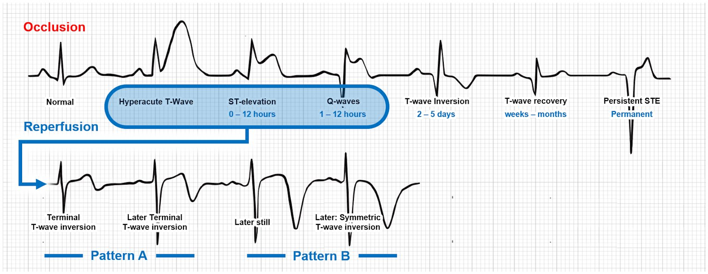
Phỏng theo Hình ảnh giảng dạy của Dr. Smith cho “Tiến triển OMI trên điện tâm đồ” (The OMI Progression on ECG)
Smith: Wellens dạng A sẽ tiến triển thành dạng B theo thời gian, nếu bạn ghi đủ nhiều điện tâm đồ. Xem tại đây:
Diễn tiến kinh điển của sóng T Wellens trong 26 giờ
Có thể xem thêm các ví dụ về sóng tái tưới máu “dạng A” (Type A Pattern) tinh tế trong các bài sau:
|

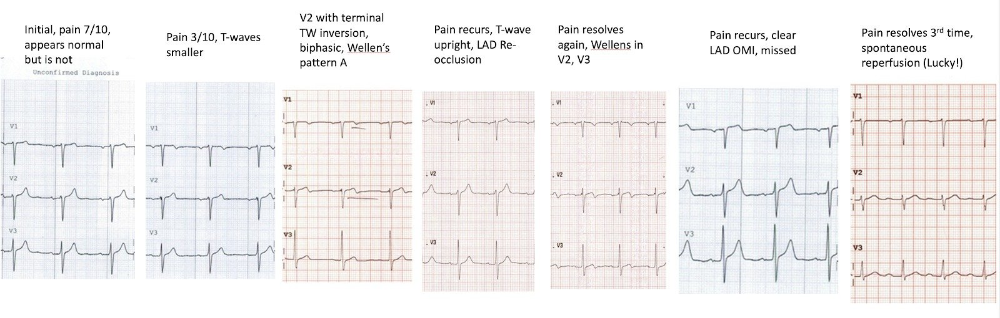
Thêm các ca khác
- Wellens’ syndrome: to stent or not? IVUS negative, Symptoms persist, Stress Testing, Instantaneous Wave Free Ratio, and Fractional Flow Reserve. (Hội chứng Wellens: đặt stent hay không? IVUS âm tính, triệu chứng dai dẳng, nghiệm pháp gắng sức, tỷ số sóng tự do tức thời và phân suất dự trữ lưu lượng.)
- A 40-something healthy male with transient chest squeezing (Một người đàn ông khỏe mạnh ngoài bốn mươi tuổi bị bóp nghẹt ngực thoáng qua)
- Why we need continuous 12-lead ST segment monitoring in Wellens’ syndrome (Vì sao cần theo dõi liên tục đoạn ST trên mười hai chuyển đạo trong hội chứng Wellens)
- Wellens’ syndrome, no culprit, what happened? (Hội chứng Wellens, không có tổn thương thủ phạm, chuyện gì đã xảy ra?)
Có thể xem thêm các ví dụ về sóng tái tưới máu “dạng B” (Type B Pattern) trong các bài sau:
- Severe Chest Pain on ED Arrival, after Wellens’ waves Seen on Prehospital ECG (Đau ngực dữ dội khi đến khoa cấp cứu, sau khi thấy sóng Wellens trên điện tâm đồ trước viện)
- Inferior ST Elevation and Hyperacute T-waves, but Patient is Pain Free. What is going on? (ST chênh lên thành dưới và sóng T tối cấp, nhưng bệnh nhân không đau. Chuyện gì đang xảy ra?)
- Inferior ST Elevation and Hyperacute T-waves, but Patient is Pain Free. What is going on? (ST chênh lên thành dưới và sóng T tối cấp, nhưng bệnh nhân không đau. Chuyện gì đang xảy ra?)
Đây là thêm các ca Wellens ở thành dưới, thành bên hoặc thành sau.
Vì hình ảnh điện tâm đồ này liên quan đến tỷ lệ cao tắc lại mạch vành và nhồi máu cơ tim xuyên thành sau đó, những bệnh nhân này cần được theo dõi chặt chẽ, nhanh chóng dùng thuốc kháng tiểu cầu và heparin truyền liên tục trong khi chờ chụp mạch vành. Ngưỡng chỉ định ghi các điện tâm đồ liên tiếp nên rất thấp.
Hình dưới đây làm nổi bật đảo ngược phần cuối sóng T tinh tế ở thành dưới trong ca này, điều mà — trong bối cảnh lâm sàng một bệnh nhân đến khám ngay sau khi cơn đau ngực kiểu đau thắt ngực tự hết — nên khiến bạn cân nhắc khả năng đây là một hình ảnh tái tưới máu (lưu ý rằng một hình ảnh tương tự xuất hiện sau tái tưới máu bằng PCI):

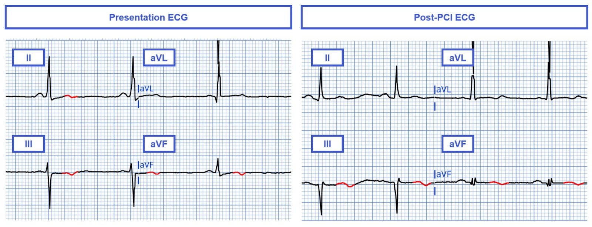
Đau thắt ngực không ổn định
Sự ra đời của xét nghiệm troponin độ nhạy cao khiến nhiều người tự hỏi liệu nó có khép lại kỷ nguyên của đau thắt ngực không ổn định hay không. Dù xét nghiệm này dường như đã làm giảm đáng kể tỷ lệ mắc UA, nó vẫn chưa loại bỏ hoàn toàn UA.
Mặc dù về mặt kỹ thuật, “tổn thương cơ tim” đã có mặt lúc nhập viện trong ca này (vì giá trị troponin đầu tiên cao hơn ngưỡng bách phân vị thứ 99 theo giới tính 2 ng/L), và do đó một số người có thể lập luận rằng biểu hiện của ông không nên được xếp là “đau thắt ngực không ổn định”, tôi lại cho rằng không khó để hình dung một tình huống bệnh nhân đến khoa cấp cứu chỉ muộn hơn một chút, khi nồng độ troponin nhiều khả năng đã thấp hơn bách phân vị thứ 99.
Hơn nữa, y văn đã xác lập rõ rằng tuổi cũng ảnh hưởng đến nồng độ troponin. Ở tuổi 60, mức hs-cTnT 24 ng/L dường như thấp hơn giới hạn trên tham chiếu (URL) bách phân vị thứ 99 (xem hình dưới đây từ một nghiên cứu gồm một quần thể tham chiếu khỏe mạnh 2.746 người, cho thấy nam giới từ 60 tuổi trở lên có giới hạn trên tham chiếu bách phân vị thứ 99 là 33 ng/L). Vì lý do này, tôi cho rằng hợp lý khi xếp chẩn đoán lúc nhập viện của bệnh nhân trong ca này là “đau thắt ngực không ổn định” khi chúng ta tính đến các ngưỡng nồng độ hs-cTnT theo giới tính VÀ theo tuổi.
Điểm này đáng được nhấn mạnh vì nồng độ/xu hướng troponin ban đầu thấp — ngay cả trong kỷ nguyên troponin độ nhạy cao — không nên tạo ra sự yên tâm giả tạo khi bối cảnh lâm sàng vẫn đáng lo ngại. Thật may mắn là bệnh nhân này chỉ ở cách phòng thông tim một dãy hành lang khi biến cố nứt vỡ mảng xơ vữa sau đó xảy ra, nhờ vậy ông đạt được thời gian từ cửa đến bóng (door-to-balloon) rất tốt.

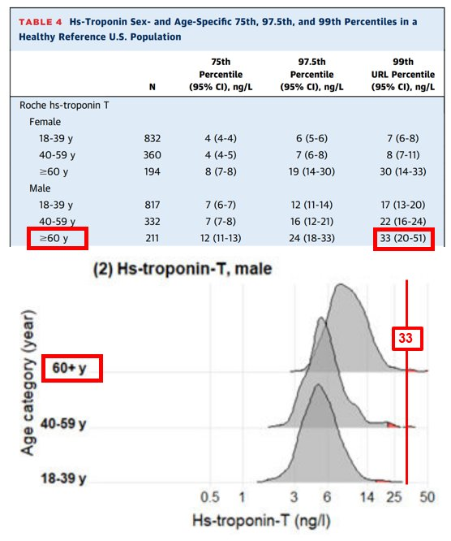
Nguồn: McEvoy, John W., và cs. “Myocardial injury thresholds for 4 high-sensitivity troponin assays in US adults.” Journal of the American College of Cardiology 81.20 (2023): 2028-2039. (Ngưỡng tổn thương cơ tim của bốn xét nghiệm troponin độ nhạy cao ở người trưởng thành Hoa Kỳ)
Ca bệnh
Trong ca này, nhiều khả năng bệnh nhân đã tự ly giải tổn thương ở động mạch vành phải trước khi đến khoa cấp cứu. Sự tắc có lẽ quá ngắn để gây tổn thương đủ cơ tim nhằm tạo ra mức rò rỉ troponin đáng kể. Sự tự ly giải và tái tưới máu động mạch vành phải trước khi đến khoa cấp cứu nhiều khả năng là nguyên nhân gây ra đảo ngược phần cuối sóng T dạng hai pha tinh tế thấy trên điện tâm đồ lúc nhập viện. 12 giờ sau khi nhập viện, động mạch vành phải nhiều khả năng đã TẮC LẠI, biểu hiện bằng nhồi máu cơ tim ST chênh lên rõ ràng thấy lúc 2:00 sáng.

===================================
BÌNH LUẬN CỦA TÔI, bởi KEN GRAUER, MD (19/5/2025):
===================================
Tôi thấy ca hôm nay của BS. Hellerman đặc biệt thú vị vì nhiều lý do. Ngoài những câu hỏi về khái niệm đang thay đổi của đau thắt ngực không ổn định và những điểm tinh tế tiềm ẩn trong việc nhận ra hình ảnh tái tưới máu — tôi sẽ bổ sung thêm vai trò gây đánh lừa mà LVH (phì đại thất trái – Left Ventricular Hypertrophy) có thể đóng trong việc đánh giá điện tâm đồ ở bệnh nhân ACS (hội chứng vành cấp – Acute Coronary Syndromes).
Điện thế đạt tiêu chuẩn LVH có hiện diện trên điện tâm đồ ban đầu của ca hôm nay — mà tôi đã sao lại và đánh dấu trong Hình 1.
- Tôi đã trình bày “Quan điểm của tôi” về Tiêu chuẩn điện tâm đồ cho LVH trong nhiều dịp (Xem Bình luận của tôi ở cuối trang trong bài ngày 20 tháng Sáu năm 2020, cùng nhiều bài khác). Như một lời nhắc dễ dùng về các tiêu chuẩn điện thế LVH và về thay đổi ST-T của “tăng gánh” thất trái — tôi đã thêm Hình 2 và Hình 3 trong PHẦN BỔ SUNG bên dưới.

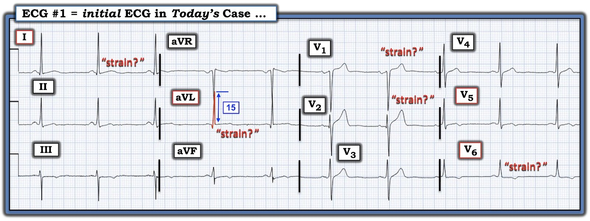
LVH có hiện diện trong Hình 1:
Việc phát hiện điện thế đạt tiêu chuẩn LVH trong Hình 1 trở nên khó khăn do sóng S sâu ở chuyển đạo aVR chồng lấp lên sóng R cao ở chuyển đạo aVL.
- Để cho rõ — tôi đã tô ĐỎ đường viền giới hạn của phức bộ QRS ở chuyển đạo aVL, trong đó sóng R thỏa tiêu chuẩn điện thế ở chuyển đạo này khi đạt chiều cao 15 mm.
- Bằng chứng ủng hộ rằng đây là một dấu hiệu thật — đến từ sóng R cao ở chuyển đạo I (đo được 17 mm) — cùng với sóng S tương đối sâu ở chuyển đạo III (11 mm) — vượt quá tiêu chuẩn điện thế LVH đôi khi được dùng là 25 mm cho tổng của 2 chuyển đạo này.
- Tiêu chuẩn điện thế hay được thỏa nhất (S sâu nhất ở V1,V2 + R cao nhất ở V5,V6 ≥35 mm) — không được đáp ứng ở điện tâm đồ #1. Tuy nhiên, bệnh nhân LVH không thỏa tất cả các tiêu chuẩn tôi liệt kê trong Hình 2 là chuyện thường gặp.
Đánh giá LVH Liên quan thế nào đến Ca Hôm nay?
Bệnh nhân hôm nay là một người đàn ông 60 tuổi trước đó khỏe mạnh, đến khoa cấp cứu vì CP (Chest Pain — đau ngực) mới xuất hiện.
- Dù không có tiền sử bệnh trước đó — người đàn ông 60 tuổi này đến khám với cơn đau thắt ngực điển hình (tức là 3 ngày đau ngực khi gắng sức, hết khi nghỉ). Và vì cơn đau ngực này có vẻ là một triệu chứng mới — nó thỏa một định nghĩa của đau thắt ngực “không ổn định” (cụ thể là bệnh nhân này đang có cơn đau thắt ngực mới xuất hiện) — với triệu chứng “báo động” là bệnh sử đau ngực 3 ngày này đã đủ khiến bệnh nhân lo lắng để tìm đến khoa cấp cứu.
- Điều cốt lõi: Bất kể điện tâm đồ và troponin ban đầu của bệnh nhân cho thấy gì — bệnh cảnh triệu chứng nêu trên phù hợp với đau thắt ngực không ổn định, và cần được đánh giá kịp thời.
NHƯNG — bệnh nhân hôm nay không có điện tâm đồ “bình thường”. Thay vào đó — bệnh nhân này biểu hiện điện thế của LVH và thay đổi ST-T bất thường ở nhiều chuyển đạo.
- Có ST chênh lên và sóng T dương lớn hơn dự kiến ở chuyển đạo V1 và V2. Đây có phải ST chênh lên cấp ở một bệnh nhân đau ngực? — HAY — Đây có thể là “tăng gánh” thất trái ở bệnh nhân LVH, mà thay vì ở các chuyển đạo bên, ta lại thấy “tăng gánh” thất trái ở các chuyển đạo trước? (Xem Bình luận của tôi trong bài ngày 6 tháng Hai năm 2020 để thấy phần bàn luận về câu hỏi lâm sàng quan trọng này).
- Suy nghĩ của tôi: Mức chênh lên của điểm J và kích thước sóng T ở chuyển đạo V2 trông lớn-hơn-mức-tôi-thường-dự-kiến khi xét độ sâu khiêm tốn của sóng S ở chuyển đạo này.
- Có sóng T đảo ngược nông ở chuyển đạo V6 — kèm ST dạng vòm (coving) kín đáo, tiếp theo là phần cuối sóng T đảo ngược nông ở chuyển đạo V5. Mặc dù sóng T đảo ngược ở V6 có thể phù hợp với “tăng gánh” thất trái — biên độ sóng R ở chuyển đạo ngực bên này lại rất nhỏ (tức là không như ta kỳ vọng nếu sóng T đảo ngược là do LVH).
- “Tăng gánh” thất trái không tạo ra hình ảnh ST dạng vòm mà ta thấy ở chuyển đạo V5.
Ở các chuyển đạo chi:
- Có sóng T đảo ngược nông ở cả chuyển đạo III và aVF. Dù bình thường có thể thấy sóng T đảo ngược phần nào ở chuyển đạo III và/hoặc chuyển đạo aVF khi QRS chủ yếu âm — chuyển đạo III lại chủ yếu dương, và ST dạng vòm xuất hiện ở chuyển đạo này không phải là điều bình thường.
- Cuối cùng, sóng T dương ở 2 chuyển đạo chi bên ( = chuyển đạo I và aVL) vốn biểu hiện tiêu chuẩn điện thế của LVH (tức là Vậy tại sao lại có “tăng gánh” thất trái ở chuyển đạo V6 vốn có sóng R rất nhỏ — mà không có ở chuyển đạo I và aVL là nơi có biên độ sóng R lớn nhất?).
Điều cốt lõi: Mặc dù tiêu chuẩn điện thế của LVH được thỏa trên điện tâm đồ ban đầu hôm nay — các sóng ST-T lại “không khớp” với dấu hiệu “tăng gánh” thất trái. Và dù tôi cho rằng bản thân điện tâm đồ #1 chưa có giá trị chẩn đoán — rõ ràng là cần đánh giá bổ sung kịp thời cho bệnh nhân này.
- Tìm được một điện tâm đồ trước đây của bệnh nhân hôm nay có thể vô cùng quý giá (tức là Nếu khác với điện tâm đồ #1 — một điện tâm đồ cũ có thể xác nhận các thay đổi ST-T “động” (dynamic), cho thấy một biến cố cấp đang diễn ra).
- Khi không có điện tâm đồ cũ để so sánh — Với bệnh sử lâm sàng là đau thắt ngực không ổn định đi kèm điện tâm đồ ban đầu bất thường của bệnh nhân — và, giá trị hs-troponin ban đầu tăng nhẹ — thông tim kịp thời lẽ ra đã có thể được chỉ định một cách hợp lý.
- Ít nhất thì — các điện tâm đồ ghi lại (sớm hơn rất nhiều so với việc chờ thêm 8 giờ) là cần thiết — và có thể đã xác nhận một biến cố đang diễn ra.
============================
PHẦN BỔ SUNG cho Bài Hôm nay:
============================
Về Tiêu chuẩn điện tâm đồ của LVH:
Có rất nhiều tiêu chuẩn điện tâm đồ để chẩn đoán LVH. Tôi liệt kê những tiêu chuẩn tôi ưa dùng trong Hình 2 — và bàn chi tiết lý do cho cách tiếp cận của tôi trong chẩn đoán LVH trên điện tâm đồ tại ĐƯỜNG LINK NÀY.
- Có một mối tương quan thô (nhưng còn xa mới hoàn hảo) giữa kích thước tương đối của phức bộ QRS trên điện tâm đồ — và mức độ lớn buồng thất trái. Về mặt lâm sàng — có thể rút ra nhận định từ điện tâm đồ về mức độ tương đối của lớn buồng thất trái dựa trên: i) điện thế tăng BAO NHIÊU, theo các tiêu chuẩn trong Hình 2; và, ii) sự hiện diện và mức độ của thay đổi ST-T phù hợp với “tăng gánh” hoặc “tương đương tăng gánh” (strain equivalent) (như minh họa dưới đây trong Hình 3).

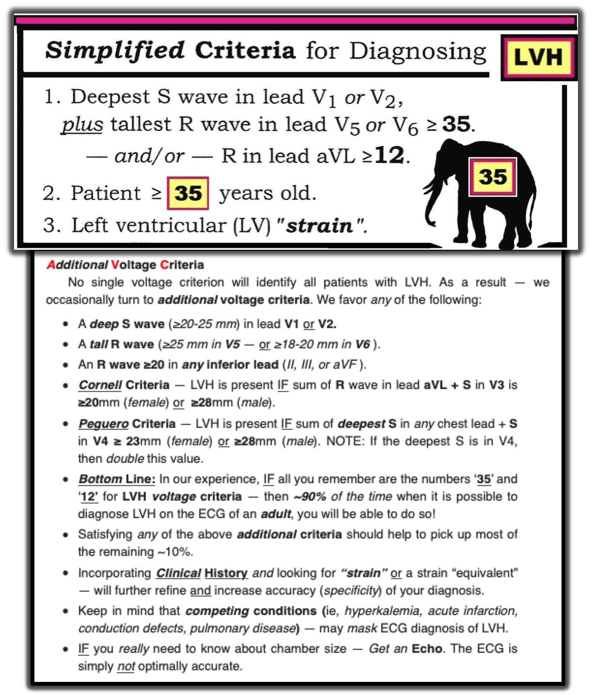
=================================
Về “Tăng gánh” thất trái (so với “Tương đương tăng gánh” ):

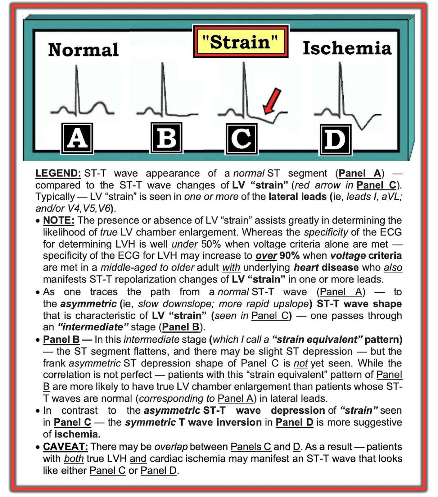